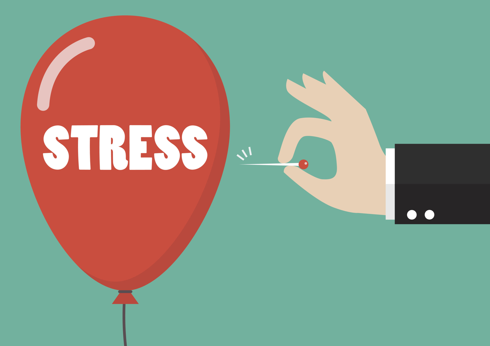

Healthy Lifestyle
What is a Healthy Lifestyle?
A healthy lifestyle benefits our bodily and emotional well-being, as well as our social relationships.
A healthy lifestyle entails eating a balanced diet and exercising regularly, abstaining from tobacco and narcotics, and obtaining adequate rest.
It should involve adequate rest, particularly sleep. Not only is good health the absence of sickness or illness, but it is also a state of whole physical,
mental, and social well-being. Our bodies operate similarly to machines, requiring a balance of protein, carbs, fat, vitamins, minerals, and water to function properly.
If your balance is off, your health will suffer. A balanced diet entails consuming no more calories than you burn during the day.
If you consume more calories than you burn, any surplus will be stored as fat.


The Problem
We frequently spend extravagantly on the development of exotic pharmaceuticals
and other forms of treatment for diseases, rather than attempting to prevent them. People worldwide are spending an increasing amount of
time engaging in sedentary activities. We spend the majority of our free time sitting: on a computer or other gadget, watching television,
or playing video games. When you lead an inactive lifestyle, you burn fewer calories, increasing your risk of weight gain;
you may lose muscle strength and endurance as a result of less muscle use; your bones may become weaker and lose some mineral content;
your metabolism may be affected, causing your body to have difficulty breaking down fats and sugars.
Inactivity is a risk factor for a variety of chronic diseases. You increase your risk of obesity, heart disease,
including coronary artery disease and heart attack, high blood pressure, and high cholesterol if you do not engage in regular exercise.


Importance of a Healthy Lifestyle
A healthy lifestyle is one that minimizes the chance of becoming seriously ill or dying prematurely. While not all diseases are preventable, a substantial share of deaths, particularly those caused by coronary heart disease and lung cancer, are avoidable. Certain types of behavior have been linked to the development of noncommunicable diseases and premature death in scientific investigations. Health is much more than disease prevention. Additionally, it pertains to physical, mental, and social well-being. When a healthy lifestyle is embraced, it creates a more favorable role model for other family members, particularly children.
-
- Stronger Immune System
- By assisting your cells in destroying viruses and bacteria, your immune system defends your body against disease and illness. A nutritious diet rich in fruits, vegetables, legumes, nuts, and seeds supports the immune system, as these foods are naturally nutrient packed. Yogurt containing live cultures also contains probiotics, which help maintain a healthy gut flora and support immune system function.
-
- Prevent you from having diseases.
- Healthy habits can help minimize your risk of developing a range of ailments, including ones that could damage your family or, worse, you. Consuming an excessive amount of food will injure you, and conversely, abstaining from meals would harm you as well. However, leading a healthy lifestyle may help you avoid disease and illness.
-
- Save your money.
- There will always be times in our lives when we will need to consult or see a doctor. It is usually prudent to see your doctor for a yearly physical checkup, particularly if you have certain health problems such as high blood pressure, diabetes, or a fever. Others are more difficult to deal with than others, and some are quite severe. However, the more healthy you are, the less frequently you should see a doctor. In practice, this can result in cost savings on consultations, prescriptions, and other treatments.
-
- Longer Life.
- According to the Centers for Disease Control and Prevention, leading a healthy lifestyle reduces your risk of dying prematurely by 66 percent from cancer, 65 percent from cardiovascular disease, and 57% from other causes. The four elements associated with a healthy lifestyle are moderate alcohol intake, abstinence from cigarettes, good nutrition, and regular physical activity. Apart from increasing your intake of whole and fresh foods, you should also avoid foods high in salt, trans fats, saturated fats, added sugars, and refined grains. Aim for at least one hour and fifteen minutes of strenuous exercise each week to reap the life-extending effects of physical activity.
-
- Improved Apperance
- It's no secret that leading a healthy lifestyle will help you lose weight and look younger, but it extends beyond that. For instance, maintaining proper hydration and sleep can help minimize the appearance of under-eye bags. Limiting alcohol use and abstaining from smoke both help to slow the aging process of your skin and eyes. Proper nutrition from a balanced diet also provides the nutrients your body requires for healthy and lustrous hair, bright eyes, taut skin, and an overall shine. Maintaining a healthy lifestyle is not about impressing others, particularly on social media, but it is about caring for your body and ensuring your health. It's a way for you to care for and appreciate your body. On the other hand, there are a few simple steps you may take to begin living a healthier lifestyle. This does not suggest that you must eliminate all cravings or wants for food; rather, it aims to assist you in limiting your consumption of unhealthy foods. Including vegetables in your diet is preferable.
-
- Mental health is more than just being free of a mental illness. It is more of an optimal level of thinking, feeling, and relating to others.
- Mentally healthy individuals tend to have better medical health, productivity, and social relationships.
- Mental illness refers to all of the diagnosable mental disorders and is characterized by abnormalities in thinking, feelings, or behaviors.
- Some of the most common types of mental illness include anxiety, depressive behavior, and substance abuse disorders.
- There is no single cause for mental illness. Rather, it is the result of a complex group of genetic, psychological, and environmental factors.
-
- Phobias: involve severe, irrational fear of a thing or situation. Examples of phobias include fear of heights (acrophobia), spiders (arachnophobia), and of venturing away from home (agoraphobia).
- Social anxiety disorder is the fear of being in social situations or feeling scrutinized, like when speaking in public.

- Panic disorder is characterized by recurring episodes of sudden, severe, debilitating anxiety (panic) attacks that are immobilizing. Those episodes usually include symptoms like racing heartbeat, shortness of breath, stomach upset, and trouble thinking. In order to be diagnosed as having panic disorder, the person must also either worry about having another attack or about what the attack means (for example, wondering if the symptoms of panic indicate they are having a heart attack).

- Major depression involves the sufferer feeling depressed most days and for most of each day for at least two weeks in a row. Along with sadness, the individual with major depression experiences a number of other associated symptoms, like irritability, loss of motivation or interest in activities they usually enjoy, hopelessness, and increased or decreased sleep, appetite, and/or weight. The person might also exhibit thoughts, plans, or attempts to harm themselves. Women with postpartum depression tend to experience many of the above symptoms for weeks to months after giving birth.
-
- Value Yourself
- Treat yourself with kindness and respect, and don't be mean to yourself. Make time for your favorite hobbies and projects, or learn new things. Keep up with the crossword puzzle every day. Plant a garden. Take dancing lessons. Learn to read and write in a new language.
-
- Surround Yourself With Good People
- Individuals who have strong relationships are usually healthier than those who don't. Make plans with family and friends who are there for you, or look for activities where you can meet new people, like a club, class, or help group.
-
- Learn How to Deal With Stress
- It doesn't matter whether we like it or not, stress is part of life. Develop good ways to deal with stress. Smile and look for humor in life, too. Laughter has been shown to improve the immune system, relieve pain, relax the body, and lessen stress. 
-
- Get Help When You Need It
- People who ask for help aren't weak. Also, it is important to keep in mind that treatment is very good. People who get the right help can get better from mental illness and addiction and lead full, rewarding lives.
-
- Carbs are bad for you
- Carbohydrates are essential to a healthy diet, providing energy for your whole body. But it’s best to get carbs from healthy, minimally processed foods, like fruits, vegetables, beans, nuts, whole grains and dairy
-
- A vegetarian diet is an automatically healthful one
- Eating a plant-powered diet can have incredible health benefits, ranging from lower rates of heart disease and diabetes to some types of cancer. However, omitting meat doesn't give you a "get out of jail free" card in terms of nutrition.
-
- It's healthier to eat egg whites rather than whole eggs
- Most people don't know that the yolk actually contains over 40 percent of the protein — and more than 90 percent of the calcium, iron and B vitamins — in a whole egg. It also contains all of the egg's healthy fat-soluble vitamins (A, D, E and K). Plus, that extra fat will help to keep you full and satisfied for longer than you would be with just the whites.
-
- Fruit has too much sugar
- The sugars naturally found in fruit come tied up with fiber, which fills you up and blunts the impact the sugar has on your body. Plus, you'll get valuable vitamins, minerals and antioxidants.
-
- Calories are bad
- While too many calories can cause weight gain, the right amount of calories gives you the fuel you need to power through your day. Think more about the quality of calories and you'll probably find yourself worrying less about the quantity.


Keeping The Mind Healthy
Maintaining a healthy lifestyle entails not only looking after our physical bodies, but also our mental faculties, as our brain is also a body organ. Here are some facts concerning mental health and mental disease that you should be aware of:
What is Mental Health?
While it may appear straightforward to describe mental health as the absence of mental
illness, the majority of professionals agree that being mentally healthy entails more. The Surgeon General of the United States defines
mental health as "a state of good mental function that results in productive activities, rewarding interpersonal connections, and the
capacity to adapt to change and overcome adversity." Mental health is an enviable state, given the benefits it provides. For example,
mentally healthy persons report having the fewest health-related constraints on their daily activities, missing the fewest days of work
completely or partially, and having the healthiest social functioning (for example, low helplessness, clear life goals, high resilience,
and high levels of intimacy in their lives).

What is Mental Illness?
Mental illness is a blanket term that encompasses all diagnosable mental diseases.
Mental disorders are defined by anomalies in thought, emotion, or behavior. Highly prevalent, approximately 46% of Americans might
anticipate meeting the formal diagnostic criteria for anxiety, depressive, behavioral, thinking, or substance-abuse disease at some
point in their lives.

What are common types of mental illness?
Things You Can Do for Your Mental Health to Avoid Having Mental Illness

Myths Healthy Diet
Healthy Diet is an important part of ensuring that one is having a healthy lifestyle. Often, people are victimized by myths about healthy diet, causing them more harm than good. Here are some myths about healthy diet: